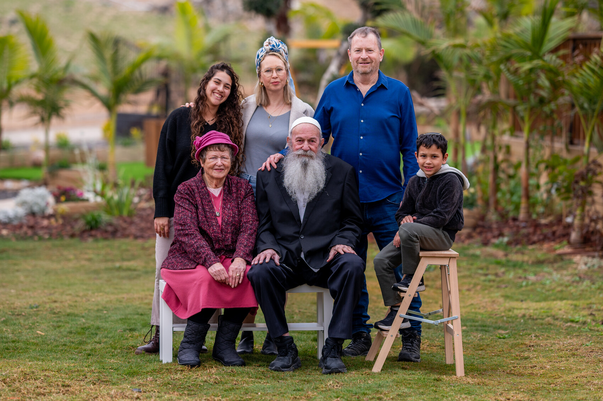

Rabbi Amram Lida was born and raised in the Borochov neighborhood, which later became part of Givatayim, to Shalom Tzvi Lida (שלום צבי לידא) and Rivka, née Zeltkin (רבקה לבית זלטקין). His parents came to the Land of Israel from Poland as pioneers. In the home in which he grew up, Jewish tradition was understood largely as heritage and folklore. Years later, he recalled that from his youth he had been an avid reader and seeker of knowledge — a quality that gradually led him toward the literature of the Sages and the world of Torah.
Amram married Ofra, née Greiss (עפרה לבית גרייס), and together they built their family. They had four children: Eiran (עירן), Oded (עודד), Einat (עינת) and Edna (עדנה). Over the years the family grew, and Amram was blessed with seventeen grandchildren. Family remained a central part of his life alongside his professional work and his Torah undertaking.

From the family archive
As an adult he qualified as a licensed surveyor (מודד מוסמך) and worked in the profession for decades. His career advanced to the position of Director of the Southern District of the Survey of Israel (מנהל מחוז הדרום במרכז למיפוי ישראל), the government body responsible for national surveying and mapping. In a very literal sense, he spent his professional life measuring the Land — precise, methodical and responsible work, qualities that later characterized his approach to editing books as well.
Around the age of thirty-five, when he was married and the father of two children, he began a profound spiritual search. He started attending synagogue, studying Torah and gradually taking on mitzvot. He later described a particular turning point when he encountered a class in the inner dimension of Torah: there he discovered, for himself, that Judaism was not a collection of isolated practices but a complete, structured and interconnected system capable of giving meaning to life as a whole.
He later became one of the close students of Rabbi Yitzchak Ginsburgh (הרב יצחק גינזבורג). The family moved to Meitar in the Negev, and for many years his home and workspace became a quiet Torah workshop: recorded lessons were played again and again, transcribed, organized, edited and shaped into texts and books.
Amram did not study only for himself. A central part of his life was devoted to making it possible for others to learn as well. His work was patient and meticulous: listening to every sentence, understanding the flow of ideas, expressing them clearly, adding structure and order — and turning oral Torah into a written and accessible treasury. This work produced dozens of volumes of Selected Lessons in Contemplation (מבחר שיעורי התבוננות) as well as the series Chasdei David HaNe’emanim (חסדי דוד הנאמנים).
He carried out this transcription and editorial work voluntarily and with a deep sense of mission, continuing until his final days. The phrase closely associated with him — "The main work is still ahead of us" — captures the way he viewed the entire undertaking: the Torah already edited was only a beginning; its purpose was to continue being studied, transmitted and brought to life in future generations.
GivatayimBorn and raised in the Borochov neighborhood to Shalom Tzvi Lida and Rivka, née Zeltkin.
FamilyMarried Ofra, née Greiss. They had Eiran, Oded, Einat and Edna, and later seventeen grandchildren.
Licensed surveyorChose the surveying profession and worked in it for close to forty years.
Southern District DirectorLed the Southern District of the Survey of Israel.
Around age 35Began a significant spiritual search and a gradual return to Torah and mitzvot.
Student and partner in disseminating TorahBecame a student of Rabbi Yitzchak Ginsburgh and devoted decades to transcribing and editing his lessons.